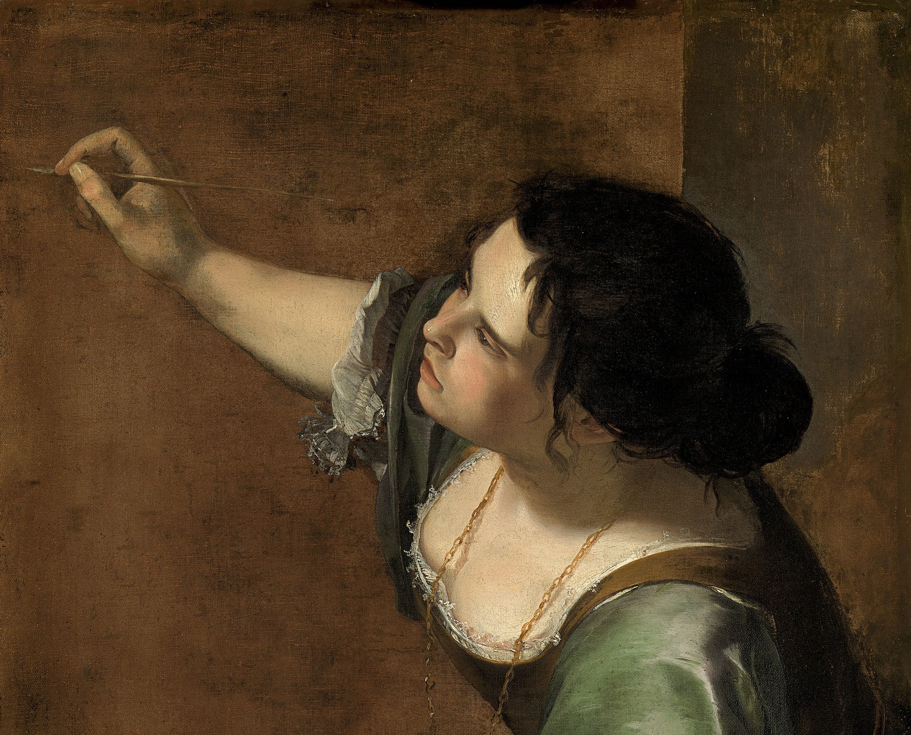
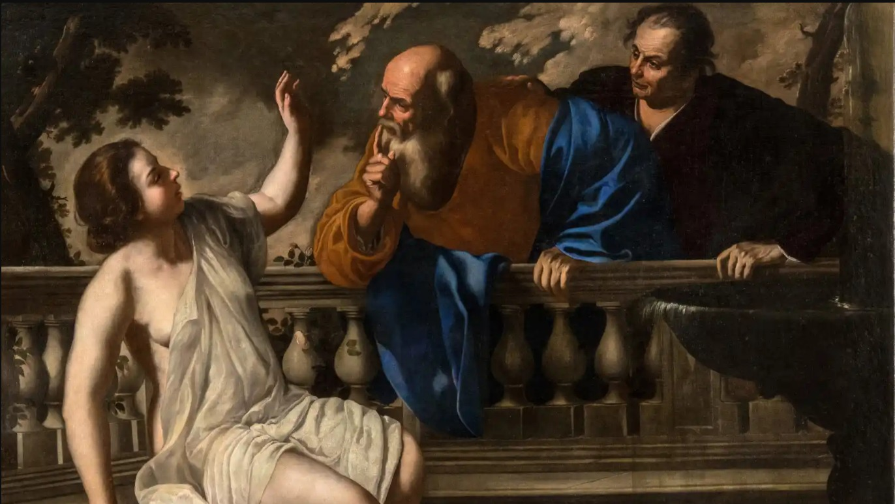
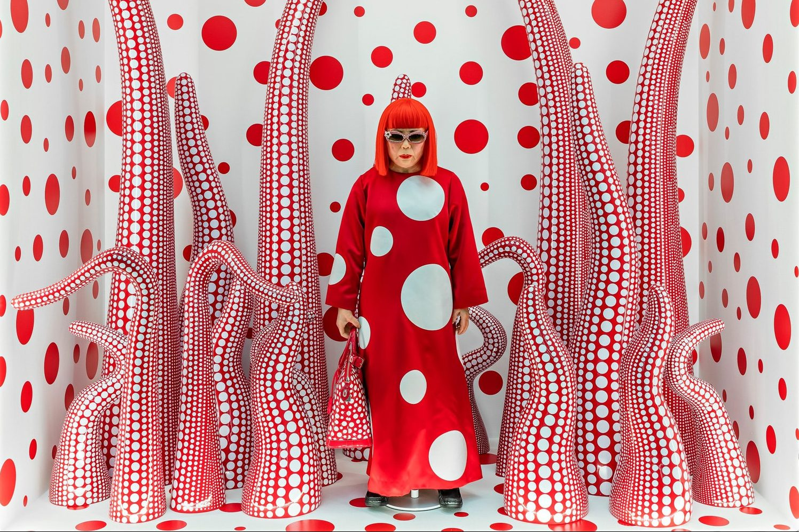
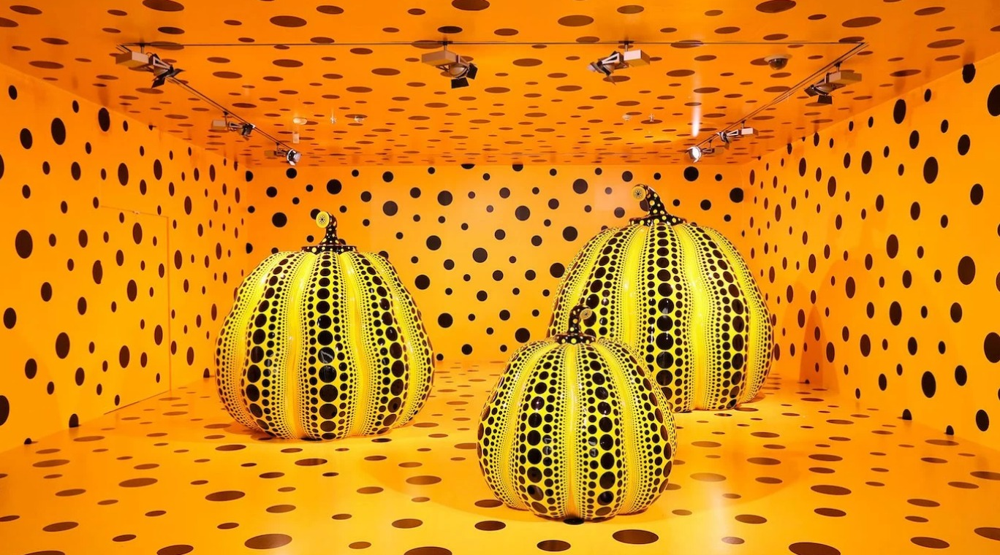

Arte
En cada acordeon vas a encontrar información sobre artistas de distintas corrientes artísticas a lo largo de la historia
Rembrandt Harmenszoon van Rijn, más conocido
simplemente como Rembrandt, fue un pintor y grabador neerlandés. La historia del arte lo
considera uno de los mayores maestros barrocos de la pintura y el grabado, el artista
más importante de la historia de los Países Bajos. Su aporte a la pintura coincide con
lo que los historiadores llaman la Edad de Oro neerlandesa, el momento cumbre de su
cultura, ciencia, comercio, poderío e influencia política.



Pionera barroca italiana, Artemisia desafió las normas de
género en la pintura. Su obra
más famosa, "Judith decapitando a Holofernes", refleja su enfoque único. Artemisia
explora la fuerza femenina con maestría, combinando el dramatismo y la expresividad. Sus
composiciones impactantes y el realismo emocional han consolidado su legado como una
figura destacada del arte barroco.
Como destacada impresionista estadounidense, Cassatt es conocida por sus conmovedores
retratos de la vida cotidiana, especialmente centrados en la maternidad. Su obra "La
bañista" exhibe la maestría con la que captura la intimidad y la conexión emocional en
sus lienzos. Cassatt contribuyó significativamente al movimiento impresionista y desafió
las expectativas sociales de la época.
Conocida como la "Reina del Art Déco", Lempicka fusionó estilos cubistas con elementos
surrealistas. Su obra, "Retrato de Madame M.", personifica la elegancia y modernidad de
la época. Con retratos glamorosos y composiciones vibrantes, Lempicka dejó una marca
distintiva en la escena artística de entreguerras.



Artista contemporánea japonesa conocida por su estilo distintivo. "Infinitas
habitaciones espejadas" es una instalación que sumerge a los espectadores en un mundo de
patrones infinitos. Kusama desafía la percepción y crea experiencias sensoriales únicas
con sus obras, consolidándola como una figura vanguardista en el arte contemporáneo.